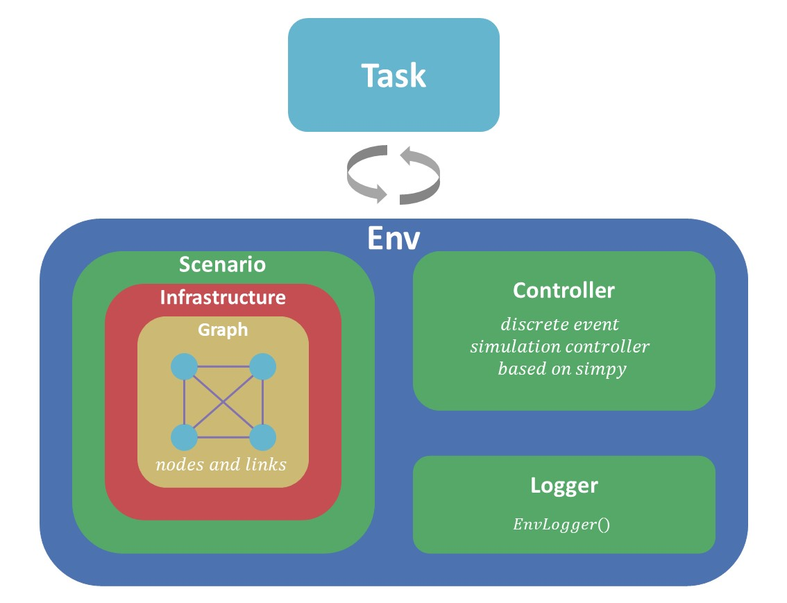
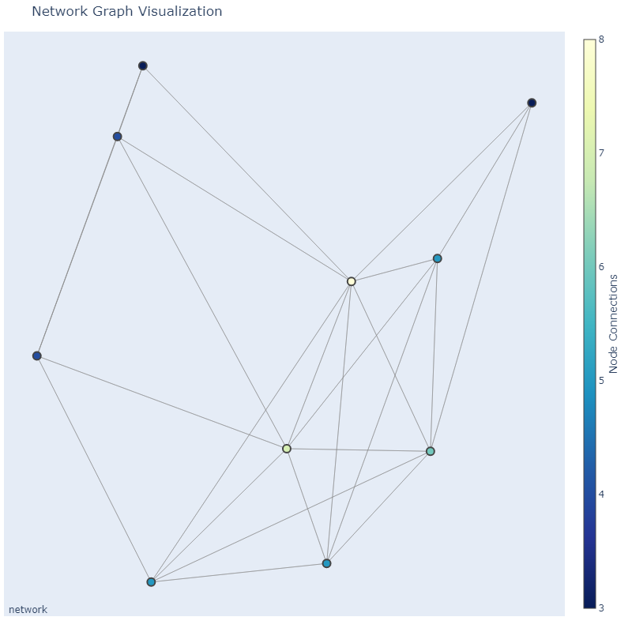

RayCloudSim：基于Python的轻量级云/雾/边缘计算模拟平台
RayCloudSim：基于Python的轻量级云/雾/边缘计算模拟平台
近期接连做了几个“深度学习 + 网络”的科研课题，在仿真实验环节却没能找到比较合适的框架/平台。一方面是网络/云/雾/边缘计算等相关课题的研究由来已久，尤其是早于深度学习的崛起，因此，在网络/云/雾/边缘计算领域比较成熟的仿真平台（如CloudSim，IFogSim，EdgeCloudSim等）大都不是用 Python 写的，这就导致在跟深度学习做结合时很不方便；另一方面，目前现有的用 Python 写的仿真平台（YAFS，LEAF等）则要么不够成熟完善要么过于复杂难以上手，难以满足我在做课题时的需求。经过了大量检索后还是没能找到合适的“轮子”，两难之下，索性结合自己近期几个科研项目的 coding 经验自己用 Python 造了个轻量级“轮子”，以上就是本项目的动机。
I. 介绍
RayCloudSim 是一个用 Python 编写的轻量级模拟平台，可用于云/雾/边缘计算基础设施和服务的分析建模和仿真。
RayCloudSim 有以下优势:
- 源码简洁、轻量化，易于阅读、理解和根据个人需求进行自定义。
- RayCloudSim 是一个基于进程和离散事件的模拟仿真平台，可以尽可能的缩短以现实世界时间衡量的模拟耗时。
- RayCloudSim 可以方便地对接主流的机器学习框架（如 PyTorch、TensorFlow 和其他基于 Python 的机器学习框架）。
RayCloudSim 可以用于以下研究课题:
- 云计算和边缘计算的性能和成本分析
- 复杂网络的流量分析
- 大规模分布式系统的资源管理和调度策略研究
- 计算任务的分配和调度算法研究
- 特定设备的部署策略研究，如联邦学习中的参数服务器
- …
II. 安装和相关依赖
-
python >= 3.8
更早的 Python 版本可能可行，但是没有经过测试。
-
numpy
-
networkx
-
simpy
以下包用于可视化，是可选的。
- matplotlib
- plotly
- kaleido
使用 Anaconda 配置 RayCloudSim 运行环境的相关命令：
1 | |
III. 起航
1. Hello World
1 | |
模拟打印信息:
1 | |
2. 指导
- 图1展示了RayCloudSim 的框架架构，主要包含两大部分：
Env和Task。

图1. RayCloudSim 的框架架构
-
需要注意的是学会使用 Simpy 对于使用 RayCloudSim 会很有帮助.
3. Tutorials
以下示例程序可以看做是渐进式的使用教程，图2展示了一个可视化示例。

图2. demo 3&4 网络结构可视化
IV. 未来更新计划
- [x] 基本版本 (2023/05/10)。
- [ ] 支持在资源（如带宽、计算资源/CU）不足时，任务可以等待一段时间。
- [ ] 支持对于“能源消耗”的建模。
- [ ] 打包并发布到 PyPI.
Citation
引用本代码项目 RayCloudSim 时，您可以使用以下 BibTeX 条目：
1 | |
此外, RayCloudSim 的开发受到了 LEAF 的启发，因此，也建议引用以下文献。
1 | |
RayCloudSim：基于Python的轻量级云/雾/边缘计算模拟平台
https://zray111.github.io/2023/05/15/RayCloudSim：基于Python的轻量级云-雾-边缘计算模拟平台/